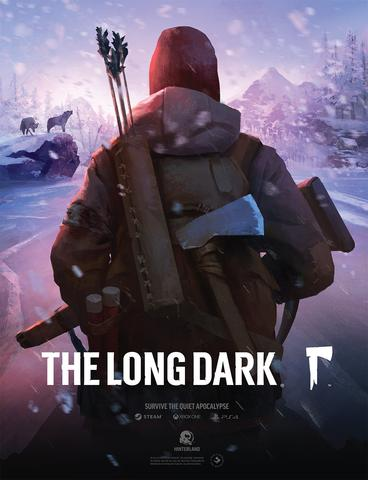
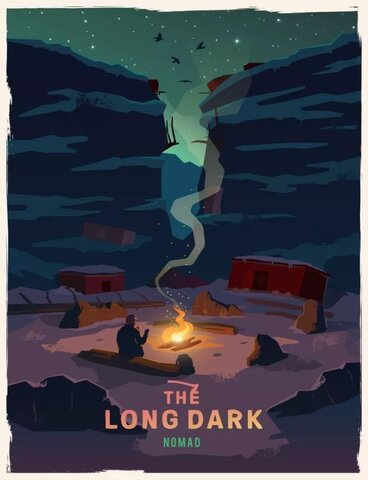

A geomagnetic anomaly has plunged the world into darkness and rendered all technology useless, including the plane you were flying over the vast, frozen wilds of Canada. You awake surrounded by flames and wreckage—badly injured and freezing to death—and find yourself in a battle to survive in one of the most inhospitable corners of the planet. It’s a hell of a place to spend the apocalypse, and death lingers around every corner of this deadly, wintry expanse. There are two distinct ways to play The Long Dark. There’s Wintermute, an episodic story mode that follows bush pilot Will Mackenzie as he searches for his missing friend. This is a linear experience with stylish, melancholy cutscenes exploring his past and the state of the world. Then there’s Sandbox, which lets you tell your own stories and explore at your leisure. The only objective here is surviving for as long as possible, and how you do that is left to you.
Developer(s) : Hinterland Studio
Publisher(s) : Hinterland Studio
Director(s) : Raphael van Lierop
Designer(s) : Raphael van Lierop, Alan Lawrance
Writer(s) : Raphael van Lierop
Composer(s) : Cris Velasco, Sascha Dikiciyan
Engine : Unity
Platform(s) : Linux, Microsoft Windows, macOS, Xbox One, PlayStation 4 ,Nintendo Switch
Release : PC, PS4 & Xbox One on August 1, 2017, Nintendo Switch on September 17, 2020
Genre(s) : Survival
Mode(s) : Single-player
STORY
The story episode centres around the relationship between Dr. Astrid Greenwood and a bush pilot named Will Mackenzie, whom she hires to fly her to a remote location in the Canadian wilderness. After a mysterious geomagnetic disaster, Astrid and Will become separated. Experience the story from their perspectives and face the struggle to survive head on.
SURVIVAL
In survival mode, the player can freely explore and survive inside a sandbox environment. Unlike story mode, the survival mode has no quests or plots, and the player may travel between regions without restriction. Survival mode is a permadeath experience. Survival is your only goal, and death your only end. Make your own survival story with every game.